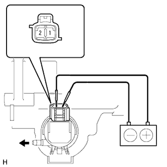

WASHER MOTOR (for Front Side) > INSPECTION |
| 1. INSPECT WINDSHIELD WASHER MOTOR AND PUMP ASSEMBLY |
Remove the washer jar.
Disconnect the windshield washer motor and pump connector.
Fill the washer jar with washer fluid.
|  |
Connect the positive (+) lead of the battery to terminal 1 of the windshield washer motor and pump, and the negative (-) lead to terminal 2.
Check that washer fluid flows from the washer jar.